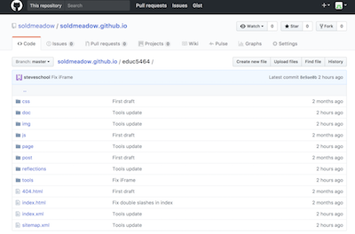

GitHub

GitHub is a ostensibly an online repository for source code but a large community has grown up around it and it is arguably the de facto standard for hosting source code for open source projects.
Pros
- Free for public repositories and students can get free private repositories.
- Web based.
- Largest repository of source code in the world, many great open source projects to learn and build from.
Cons
- Lots of jargon that needs to be learnt such as pushing, pulling, commits and branches.
Recommended For
- Students in vocational ICT courses.
- Managing collaboration in software development projects where students are working as a group.
- As a resource for source code to build upon or learn from.
Details
Software development projects often involve many files with complex interdependencies between them. The complexity of managing these files is increased when multiple developers are working on the project and multiple people may be modifying the same files. Version control software arose to manage these complex interdependencies. Git was developed as the version control software for the Linux open source project which is arguably the largest distributed software development project in the world with over 20 million lines of code and over 10,000 developers.
GitHub is an online website and community that hosts software projects using Git for version control. In Git terminology a software project is stored in a repository and GitHub hosts these repositories. GitHub added social networking features as well as other valuable features such as bug reporting and issue tracking.
Using GitHub and Git can initially seem daunting as there is a large amount of jargon that needs to be understood. For example, you clone a repository, make changes, commit your changes, push them back to the repository and pull down other people’s changes. However, many great GUI tools have been developed to help simplify working with Git and GitHub with many of them being free such as GitHub Desktop. Additionally, many integrated development tools have support for Git built in such as Xcode which is provided free by Apple for developing software for their platforms.
GitHub is a great way for students to learn about online collaboration as required by the Digital Technologies Curriculum. Even if students don’t use GitHub they should be aware of it and know how to download projects that are hosted on GitHub just because of the sheer number of projects on GitHub.